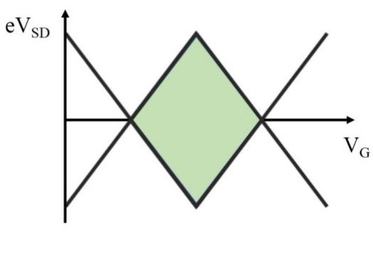
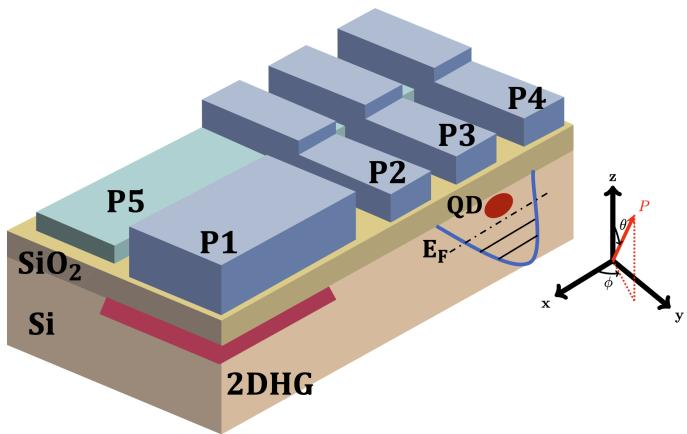
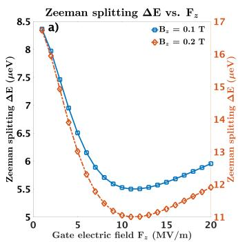

物理动机：为什么是空穴
半导体量子点中的载流子可以是导带电子或价带空穴。电子自旋比特已经在硅、GaAs 等平台上成熟，但工程经验表明电子自旋缺乏直接的电偶极矩，硅电子比特的快速操控与读出需要额外的微磁体或共面微波条带——这些结构在多比特阵列中显著提高工艺复杂度。空穴态填补了这一空缺：
- 轨道成分：价带顶主要来自原子 轨道（自旋轨道 ），不是 轨道（）。这一轨道成分把晶格对称性破缺引入基态，使自旋轨道耦合（SOC）天然存在且较强；
- 超精细弱：锗的稳定同位素（Ge、Ge、Ge、Ge）的核自旋均为零，纯化锗中费米接触超精细项可忽略。硅的稳定同位素核自旋也多为零（Si、Si），但电子自旋 轨道会带来接触超精细，相比之下空穴 轨道的接触超精细更小；
- 有效质量小：空穴有效质量比电子更小，在相同能级间距下允许更大的量子点尺寸，对工艺波动更宽容；
- 有效 因子强烈各向异性：与导带电子 的近各向同性不同，价带空穴的 因子随磁场方向与电场方向可大幅变化，为磁场方向优化提供了旋钮。
实际平台上，论文覆盖两条互补的工艺路线——锗棚顶纳米线（自组织生长的细长 Ge 结构）与应变锗量子阱（平面 Ge/SiGe 异质结中积累的二维空穴气）。前者适合低器件数深探索，后者与 CMOS 工艺兼容、便于二维阵列扩展。
理论图像
价带顶的 Luttinger–Kohn 描述
立方半导体的价带顶在 点是四重简并的 多重态。空穴自旋比特的”自旋”并非电子意义上的 ，而是有效自旋 的赝自旋投影。这一表象下， 点附近低能级激发由 4×4 Luttinger–Kohn 哈密顿量描述（论文中以 或 表示）：
其中 是波矢， 是 角动量算符， 是 Luttinger 参数；应变与反演不对称性打开的项又把立方对称降到实际器件的 或更低。在强量子限域（横向尺度远小于纵向）下，重空穴（heavy hole, hh, ）与轻空穴（light hole, lh, ）的分裂 通常远大于塞曼能与电荷能，于是最低两条子带由一对重空穴赝自旋 组成——这就是空穴自旋比特的计算子空间。

锗纳米线空穴型单量子点电路模型与库仑振荡/菱形图
单点比特哈密顿量
把两条重空穴子带作为计算子空间，单空穴自旋比特的最低阶有效哈密顿量在形式上与单电子自旋比特一致：
其中 是 Pauli 矢量、 是 3×3 的 张量、 是外磁场。差别在于导带电子 几乎各向同性，而空穴的 在晶轴坐标系下对角元大小悬殊且带内禀各向异性，对外磁场方向与栅极电场方向都敏感——这正是后文磁场方向优化与栅压调谐的物理根源。
自旋轨道耦合项
当量子点尺寸有限、量子点界面或栅压破坏反演对称时，会出现两类 SOC 项：
- Rashba 型 ：源于结构反演不对称（界面、栅电场）。在空穴体系中， 通常比电子大两到三个量级；
- Dresselhaus 型 （沿特定晶轴方向的一种典型形式）：来自体反演不对称（闪锌矿或应变引入）。
实际锗量子点的主导机制常是重空穴–轻空穴混合产生的”类 Rashba”项，与电场强度线性可调。一个常用的微观长度刻画强度：
即”自旋轨道长度”。 越短，单位电场位移产生的有效自旋转动越大，EDSR 越快。棚顶纳米线双量子点实验给出 、，与 GaAs 电子体系 形成鲜明对比。
自旋阻塞漏电流的来源
双量子点中进入泡利自旋阻塞（Pauli spin blockade, PSB）区后，理想情况下漏电流为零。空穴体系的漏电流有三种典型来源：
- ：超精细相互作用引起的自旋翻转；
- ：左右两个量子点 因子差异 导致的自旋混合；
- ：自旋轨道耦合引起的能级耦合与自旋翻转。
论文通过测量漏电流的磁场依赖、失谐依赖与方向依赖，分离这三种贡献。例如左右点 因子差异会把阻塞解除的临界磁场从零推至 ，而纯 SOC 项贡献通常随磁场呈偶次方衰减。把漏电流谱拟合到模型中即可反推 SOC 矢量场 的方向、强度与栅压依赖性。
单比特操控与读出
EDSR 哈密顿量
对单点比特，沿某一电极施加微波电压 ，把交流电场 通过自旋轨道耦合映射为等效磁场 ，得到旋转坐标系下的有效哈密顿量
其中 是量子点特征尺寸、 是重空穴–轻空穴分裂或能级间距、 是含 Rashba/Dresselhaus 系数的归一化常数。当微波频率 共振时，布洛赫矢量绕等效横向场进动，出现 Rabi 振荡：
锗空穴体系 可达数百 MHz 到数 GHz 量级，远高于电子自旋比特常报告的 1–30 MHz。论文中报告的最高值： 棚顶纳米线 ； 平面应变锗几何门区 用于容错优化的”低速率高保真”区。
操控序列与时间域测量
标准时间域协议包括：
- Ramsey 序列 测拉莫尔进动频率 与失相时间 ；
- Hahn echo 重聚低频噪声，把 提升到 ；
- CPMG / dynamical decoupling 把 脉冲串延长到毫秒级，与电荷噪声频谱耦合；
- Rabi 扫描 改变脉冲长度 ，记录翻转概率随时间的正弦振荡，提取 与 。
锗棚顶纳米线单空穴比特实验用 Hahn echo 把退相干从 提升到 ，并实现 脉冲单比特翻转保真度超过 99%；另一组实验在最优工作点下测得 。
读出：自旋–电荷转换
空穴比特没有直接的磁矩读出通道，通常借用以下自旋–电荷接口：
- 能量选择读出：把 、 调节到与漏极能级对齐的能量差处，利用 Pauli 自旋阻塞判定隧穿是否发生；
- PSB 读出：在双量子点偏压三角形底部监测漏电流，漏电流大小直接反映比特态；
- 电荷感应器（QPC、单电子管、射频反射）：通过邻近电导变化感知比特点电荷态——若比特点中的最后一个电子自旋翻转改变了双点电荷分布，感应器立即给出电学信号；
- 腔色散读出：把比特耦合到超导微波腔，用比特–腔色散位移读取电荷或自旋态；已报道的锗棚顶纳米线空穴双量子点–腔耦合强度达 。
平面 MOS 硅平台的电操控：词条主数据来自 Si/SiGe 应变外延；MOS 平台（氧化物界面）的空穴量子点同样实现 EDSR 电操控——氧化硅界面的自旋轨道参数不同但操控可行，且 MOS 工艺与 CMOS 产线兼容性更强。

MOS 硅空穴量子点的电操控：氧化硅界面的 EDSR——平台工艺与操控能力的兼容验证。图源：Rodionov et al. (2009)，Fig. 1。

Rabi 振荡与相干：MOS 平台的空穴自旋操控指标。图源：Rodionov et al. (2009)，Fig. 2。
与其他概念的关系
- 单自旋量子比特：空穴自旋比特是单自旋比特在价带的对应物，共享布洛赫球编码与塞曼劈裂图像，但物理机制（ 轨道 SOC、各向异性 ）不同。
- 电偶极自旋共振：空穴比特的”快速操控”几乎完全依赖内禀 SOC 提供 EDSR，与硅电子通过微磁体梯度 EDSR 形成两条平行路线。
- 翻转模式量子比特：把硅纳米线空穴离域到双量子点即得空穴 FM 比特——内禀 SOC 提供自旋–电荷杂化、 天然成为一阶电荷噪声甜点，实测 Rabi 达 130 MHz、单门品质因子 380，是空穴强自旋轨道在腔耦合架构里的直接兑现。
- 锗棚顶纳米线 vs 应变锗空穴平台：前者是深探索物理与高性能单器件的优选，后者是 CMOS 兼容与二维阵列的工业路径。
- 几何量子门：抗共振频率噪声的优化操控方案，在锗空穴比特上把单比特门保真度推进到 ，超过容错阈值。
- 双量子点与电荷稳定图：锗空穴比特常以双量子点为最小工作单元，漏电流读出与电荷稳定图直接挂钩。
- 电荷噪声：强电偶极把空穴比特与电荷噪声耦合，相干性与操控保真度对工作点和磁场方向都敏感；这是磁场方向优化的物理动机。
- 微波谐振腔与自旋–光子耦合：锗空穴比特向长程耦合与多比特扩展推进的关键接口。
- Rabi 振荡、Ramsey 干涉、动力学解耦：时间域操控协议的”通用词汇”。
- 二维载流子气：平面应变锗形成二维空穴气（2DHG），是把宏观栅极几何翻译成单/双量子点的物理基底。
- 界面缺陷：应变锗中 Ge/SiO 界面态会捕获空穴造成阈值漂移，并把微观二能级系统引入腔谐振频率，是空穴比特走向大规模阵列必须解决的工程问题。
参数与量级
| 量 | 典型值 | 来源 |
|---|---|---|
| 自旋轨道耦合强度 | （锗棚顶纳米线双量子点） | |
| 自旋轨道长度 | nm（棚顶纳米线） | 对比：GaAs 电子 |
| 单比特 Rabi 频率（高速） | 本站论文（平面应变锗） | |
| 高速区 | （@ ） | 本站论文（平面应变锗） |
| 优化工作点 提升 | 约 5 倍（相对常规工作点） | 本站论文（平面应变锗） |
| 几何门单比特保真度 | （ 区间均 ） | 本站论文（平面应变锗） |
| 动力学门优化后保真度 | 最高 ，超过容错阈值 | 本站论文（平面应变锗） |
| Hahn echo 提升 | 本站论文（平面应变锗） | |
| 空穴–腔耦合强度 | 本站论文（棚顶纳米线–腔耦合） | |
| 重空穴有效质量 | 比电子小（具体值与应变/限域相关，论文强调”对量子点尺寸要求相对宽松”） | 本站论文（棚顶纳米线） |
| 单比特门速度（锗平面异质结） | Rabi （ 门 量级）、单比特保真度 99.3% | Hendrickx et al., Nature 577, 487 (2020) |
| 两比特 CX 门时长（锗平面异质结） | 55–75 ns（电荷对称点、常开交换 + 频率选择） | Hendrickx et al., Nature 577, 487 (2020) |
| 单比特保真度（噪声甜点运行） | 99.97%（各向异性噪声敏感度的甜点工作点） | Hendrickx et al., Nat. Mater. 23, 920 (2024) |
| 阵列规模 | 四比特处理器 → 10 比特二维阵列 → 18 比特模块化阵列 | Hendrickx 2021、John 2025、Dijkema 2026 |
| 长程穿梭 | 空穴自旋态经 9 点量子点链穿梭保持相干，等效输运长度达数百微米 | van Riggelen-Doelman et al., Nat. Commun. 15, 5716 (2024) |
上表"来源"栏给出可核查的原始文献；数据均为各论文自报口径，实验条件不同时不可直接横比。
实验特征
锗空穴比特在低温（mK 量级稀释制冷机）、高磁场（百 mT 到几 T）与静电门控（电学方法定义量子点）下工作。典型测量链路：
- 用直流输运（库仑阻塞、库仑菱形、自旋阻塞漏电流）确认单/双点形成与电荷稳定图；
- 用 PSB 漏电流与磁场方向拟合反推 SOC 矢量场与双点 因子差；
- 在 PSB 漏电流极小区做时间域 EDSR（脉冲 Rabi、Ramsey、Hahn echo、CPMG）；
- 比较动力学门、几何门与磁场方向扫描下保真度、相干时间与噪声敏感度，定位对电荷噪声最不敏感的局域最优工作点；
- 可选：把比特耦合到超导微波腔，用反射信号做色散读出，或评估空穴–腔耦合强度 。
论文中报告的关键实验特征包括：
- 锗棚顶纳米线双量子点首次观测多种 EDSR 谱线模式；
- 平面应变锗中识别 SOC 矢量场方向、强度与栅压依赖，验证栅压连续可调 SOC；
- 在优化磁场方向下，电荷噪声敏感性最小的工作点处相干时间提升约 5 倍、动力学门保真度提升约 2%；
- 几何相位门在 8–19 MHz 的 Rabi 频率范围内均能实现 >99% 单比特门保真度，并直接通过外加共振频率噪声验证其鲁棒性；
- 把空穴双量子点与超导微波腔偶极耦合，实现了腔探测、电荷比特读取与空穴–腔耦合强度提取。
物理优势与代价
| 维度 | 优势 | 代价 |
|---|---|---|
| 工艺 | 不需要微磁体/微波条带，CMOS 兼容 | 应变锗需要 Ge/SiGe 异质结高质量生长与界面钝化 |
| 操控 | Rabi 频率高（数百 MHz），栅压连续可调 | 强电偶极把电荷噪声重新耦合进自旋频率与驱动强度 |
| 相干 | Si、纯化 Ge 核自旋为零、超精细弱 | g 因子各向异性、相干时间对外磁场方向敏感 |
| 扩展 | 与现有 CMOS 工艺兼容；自旋轨道强便于电场调谐 | 大阵列需抑制微波串扰、频率拥挤与器件不均一 |
由此衍生出三条互不冲突的优化路径：
- 操控方法：用几何量子门等相位门降低对控制参数噪声的敏感性；
- 工作点优化：旋转外磁场方向、选择合适的势垒电压，让电荷噪声耦合最弱、相干时间最长；
- 材料工程：用臭氧钝化、自洽能带/缺陷建模与低缺陷密度的腔设计，减弱界面态对腔与比特的耦合。
- 激发态资源：跳出基态双态的另一条路——硅 MOS 空穴点中激发双态参与的跃迁 Rabi 频率比基态双态高 1–4 个量级（面内驱动下可达 THz），可做激发态编码、qudit 或 Raman 虚跃迁中继，见空穴激发态巨拉比跃迁。
参考文献
- 锗空穴自旋比特的快速两比特逻辑与处理器扩展：Hendrickx et al., Nature 577, 487 (2020)、Hendrickx et al., Nature 591, 580 (2021)。
- 噪声甜点运行与 10/18 比特阵列：Hendrickx et al., Nat. Mater. 23, 920 (2024)、John et al., Nat. Commun. 16 (2025)、Dijkema et al., arXiv:2604.01063 (2026)。
- 空穴自旋穿梭：van Riggelen-Doelman et al., Nat. Commun. 15, 5716 (2024)。
完整文献库（含各篇站内全文页）见 参考文献库。